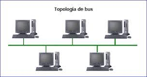
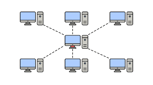
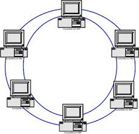
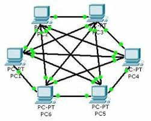
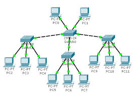

Topologia
Las topologías de red describen la disposición física o lógica de los dispositivos en una red, y las principales son la de bus, donde los dispositivos se conectan a un cable central; la de estrella, con un dispositivo central al que todos se conectan; la de anillo, donde los dispositivos forman un círculo; la de malla, con conexiones redundantes entre nodos; la de árbol, una jerarquía de bus y estrella; y la híbrida, que combina dos o más de estas.
TOPOLOGIAS FISICAS BASICAS

BUS:Todos los dispositivos comparten un unico cable de comunicacion, actuando como una red troncal o "bus"
Estrella:Todos los dispositivos se conectan a un punto central (un concentrador switch), y la comunicacion debe pasar por el.
Anillo: cada dispositivo esta conectado al siguiente, y el ultimo al primero, formando un circuito cerrado.
malla: cada dispositivo se conecta a todos los demas o a varios otros, creando multiples rutas de comunicacion y alta redundancia.
Arbol (o estrella jerarquica: cambia caracteristicas de las topologias de bus y estrella, con un punto central desde el cual se ramifican otros grupos de dispositivos, como tronco de arbol.
Regresar al inicio.